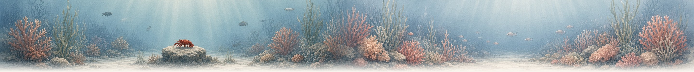
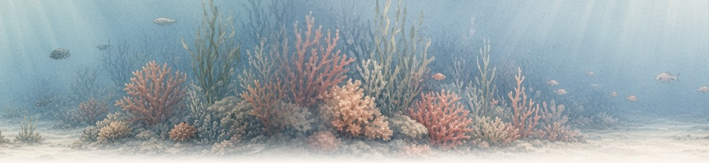

Over twee weken moet je praktijkopdracht af. Je verdeelt het werk over de dagen.
 Lobsymiddelbare schoolLobsymiddelbare school
Lobsymiddelbare schoolLobsymiddelbare school


 koraalrifschatgrotPauze-eilandvuurtorenlagune
koraalrifschatgrotPauze-eilandvuurtorenlagune